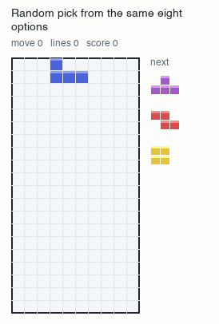
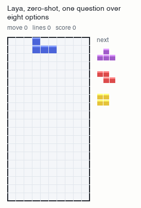
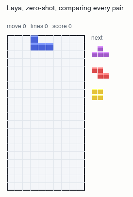
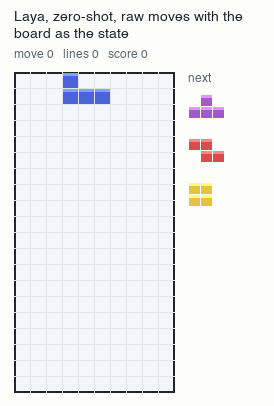
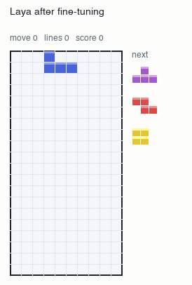

What I learned trying to get a small decision model to play Tetris
A record of the things that did not work, and the fine-tune that did.
1. The game
I wanted to see whether a small model could play Tetris. The model I picked, Laya, is not a language model, since you describe a situation, list the possible answers, and it returns a probability for each one in about 25 milliseconds on my Mac. That seemed like the right shape for the job, because every time a piece appears you have to choose among a handful of places to put it.
I wrote Tetris so that the whole game fits on one line of text and every move has a name, like left
or drop, which means that anything able to send text can play it. The line includes the state of the
random number generator, so pasting it back in resumes a game exactly where it stopped. There is a web version you can play and a Python copy for training, both using the same generator so that
a seed gives the same game in either. A state looks like the line below.
TETRIS1 s=0 l=0 o=0 c=O0@4,0 h=- hc=1 q=JITZL g=S rs=2399460328 b=2. The first attempt
I started from the assumption that the model would need to see the board. The state therefore began with a short summary of the falling piece, the next pieces, the height of each column and the number of holes, followed by the board as rows of letters. For the options I did not offer raw moves, because the model would have to imagine what each one does to the stack. Instead my code worked out every place the piece could land, kept the eight best, and described each by what would happen there. The shortlist comes from a hand-written heuristic that scores a landing spot on lines cleared, holes, bumpiness and height, and it serves as the answer key throughout. The block below is what the model saw, with four of the eight options shown.
Tetris. Piece I, next JZTIO, hold none. Column heights 3 3 1 1 1 2 1 0 0 0. Holes 0. Score 846, lines 4. Board top to bottom: OO......../OO...T..../SLLJTTT...
Where should the piece be placed? Prefer clearing lines, then no holes, then a low flat surface.
column 0, rotated 1: clears 0, holes 0, height 7
column 2, rotated 1: clears 0, holes 0, height 5
column 9, rotated 1: clears 0, holes 0, height 4
column 4, rotated 1: clears 0, holes 0, height 5
...Whole games are slow and noisy to evaluate, so I measured how often the model picked the same option as the heuristic on 300 board positions. Chance on the real shortlist is 15% and the model reached about 21%, which is close enough that I began looking for my own mistake.
3. Suspect: the board
The first suspect was the one I was surest about, so I changed only how the board was shown. The table gives the share of right answers on a two-option test, where one option is clearly the best and the other clearly the worst, and on the real shortlist of eight.
| State shown to the model | Two options | Eight options |
|---|---|---|
| The word "Tetris" only | 53% | 15% |
| Summary only | 74% | 24% |
| Summary and the board as letters | 66% | 21% |
| Summary and the board as # and . | 71% | 20% |
A summary of heights and holes helped a great deal, since replacing the whole state with one word took the easy test down to 53%, and adding the board made it slightly worse. On the real shortlist the three versions with a summary sat within four points of each other, so I suspect the model was mostly ignoring the picture of the board, which was the first hint that it might matter less than I had assumed.
4. Suspect: the options
That left the way the options were written, and the table gives the same two measures for six descriptions of the same placements.
| How each option was written | Two options | Eight options |
|---|---|---|
| Column and rotation only | 48% | 20% |
| Column, rotation and numbers | 74% | 24% |
| The same in plain English | 68% | 21% |
| Letters and numbers, with holes shown as a change | 50% | 14% |
| Letters and numbers | 86% | 26% |
| Letters, numbers and a bumpiness figure | 96% | 21% |
With the numbers removed the model scored what guessing scores, so the numbers were the only thing it was reading. It read them better once I labelled the options with letters and dropped the column and rotation words, and better again with a bumpiness figure added. On the real shortlist, though, no version did better than 26%, so whatever the model had learned to read, it could not use it to separate options that were close in quality.
5. Suspect: the model's habits
The reason for dropping the column and rotation words came from a separate test, in which I shuffled the options before every question so that position carried no information. A model that reads the options should pick each slot equally often, and this one favoured the early slots. It was just as uneven with columns, choosing column 0 137 times over 500 boards where a random picker would choose it about 59 times. Given eight options that differed only in their column, it put 0.48 of its probability on column 0, which is rather like someone who always orders the first thing on the menu. It means that when options look alike the answer depends more on the labels than on what they say.
6. Fewer options and more orderings
Because of that habit, the cheapest improvement was to ask several times with the options shuffled and average the answers, which lifted the easy test from 86% with one ordering to 95% with four. The table shows the share of right answers as the number of options grows, and chance falls along with it.
| Options on offer | Right answers | Chance |
|---|---|---|
| 2 | 74% | 58% |
| 3 | 58% | 40% |
| 4 | 52% | 30% |
| 6 | 39% | 20% |
| 8 | 32% | 15% |
On the real shortlist the model stays between 16 and 22 points above chance from two options to eight, so I think the trouble is mostly in separating close options and less in the length of the list.
7. Real games
I then played ten real games of at most 150 moves with the improved format and a single question over the eight options, and five games with the pairwise comparisons that had agreed with the heuristic 80% of the time offline.
| Player | Lines per game | Moves before the game ended |
|---|---|---|
| Random pick from the same eight | 0.2 | about 28 |
| Laya, one question over eight options | 0.1 | about 32 |
| Laya, comparing every pair | 4.2 | about 47 |
| The heuristic | 56.4 | no game ended in 150 |
Comparing pairs got the model some lines, although all five games still ended early, and in the best of them the stack reached the top with the right-hand column still empty. The GIFs below show these games, all played from the same seed so that the pieces arrive in the same order.



8. The original idea: raw moves
My original idea was to give the model the board and let it choose raw moves, so I ran that last. At each board position the teacher's next move was a rotation, a step to one side or a drop, and the table gives the share of positions where the model chose the same move, against 14% for guessing and 46% for always choosing drop.
| State shown to the model | Matches the teacher |
|---|---|
| The word "Tetris" only | 8% |
| Summary only | 6% |
| Summary and the board as letters | 4% |
| Summary and the board as # and . | 6% |
The model scored below chance in every version, because it picked rotate or move down almost every time. It never chose left or right in 1,200 tries, so I would expect every piece to come down the middle of the board in a real game.

9. Reading the documentation
At this point I read the documentation, which describes Laya as a fast base to specialise and not a zero-shot decision engine, and which links a Snake demo that went from roughly 16% accuracy to about 99% after 18 minutes of fine-tuning on a laptop. I had spent a good while building test harnesses to measure a model doing something it was never designed to do, which I would have known if I had read the documentation first.
10. Fine-tuning
The training data came straight from what the experiments had shown. Each row holds a short summary and a table of the eight options with letters, shuffled so that a letter means nothing on its own, and the label is the heuristic's preference turned into probabilities so that near-ties share the weight. Whole games went either to the training set or to the test set, so the test boards are never ones the model has seen. Training was a LoRA fine-tune, which adjusts a small add-on instead of all of the model's weights, run in LayaStudio on my Mac from the same model that had been guessing. One row is shown below, where option E clears a line and takes all of the probability.
Tetris. Piece S, next ZIT, hold none. Stack height 2, holes 0, bumpiness 4. Options:
A: clears 0, holes 1, bumpiness 8, height 4
B: clears 0, holes 1, bumpiness 7, height 5
C: clears 0, holes 0, bumpiness 5, height 3
D: clears 0, holes 0, bumpiness 8, height 4
E: clears 1, holes 0, bumpiness 4, height 1
F: clears 0, holes 1, bumpiness 6, height 3
G: clears 0, holes 0, bumpiness 8, height 3
H: clears 0, holes 1, bumpiness 7, height 4| Player | Lines per game | Games that lasted 150 moves |
|---|---|---|
| Laya after fine-tuning | 56.6 | 10 of 10 |
| The heuristic | 56.4 | 10 of 10 |
The tuned model chose the same move as the heuristic on nearly every turn and took all 480 of the line clears on offer, so it plays the way its teacher does, as the GIFs show.

11. What this does not show
The tuned model matches the heuristic, and since it was trained on the heuristic's opinions it should not be expected to beat it. It also never sees the board, because my code builds the table of options, so what it learned is closer to reading a scoring rule than to playing Tetris. A 150-move game cannot separate the two, because 60 lines is the most anyone could clear. What I still do not know is whether a model could learn to play from the board alone, without my code building the table for it, and that is what I want to try next.